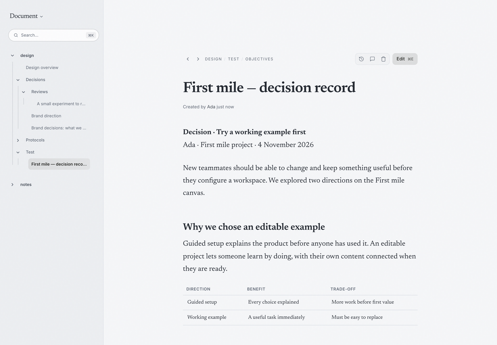

Features
These capabilities are implemented in the current local and desktop preview. The handbook is public; the app is shared by invitation. “Available” here does not mean a general public release or a hosted service.
Think — explore ideas
| Capability | What it does |
|---|---|
| A shared canvas | Notes, text, flowchart shapes, connectors, images, vector stickers and sections |
| Smooth object handling | Selection rectangles, Shift-add, move, resize, duplicate, copy/paste, grouping and undo |
| Intentional placement | New content appears near the viewport with space between objects |
| Live editing | Notes update while typing; routine save chatter stays out of the way |
| Direct table controls | Edit cells, select ranges, add rows/columns, clear or delete selections without a model |
| Visual templates | Brainstorm, retrospective and decision-flow layouts; bulk notes from a list |
| Shared workshop tools | Timer presets, pause/resume, voting and results in an anchored panel |
| Searchable help | Grouped shortcuts, keyboard focus and narrow-window layouts |
| Canvas settings | Name, live background preview, save/discard protection in a drawer |
| Visible agent activity | Selected conductor shape, state motion, target cursor and object highlights |
| Links to the rest of the workspace | Create issues from notes, write up a selection, ask the conductor |
| Portable checkpoints | Canvas objects persisted through revisioned operations and Markdown/Git checkpoints |

Think canvas covers the interaction details, permissions and limits.
Plan — make the next step clear
| Capability | What it does |
|---|---|
| Issues and projects | File-backed work with owners, status, priorities, comments and linked context |
| Multiple views | Lists, boards and dependency canvases over the same work |
| Objectives and key results | Clear hierarchy, progress, confidence, check-in age and linked issues |
| Sensible freshness | Completed binary results stop asking for updates; recurring metrics keep their freshness checks |
| Contextual conversations | Workspace conductor and separate task sessions where configured |
| Shared appearance | Workspace primary color, cool neutral surfaces and the same sidebar/search rhythm |
| Lightweight creation | New issue uses the shared light primary action; create before filling every detail |

See Objectives and key results and The conductor. Provider accounts and live agent sessions depend on the agent setup you bring; the app includes no model.
Document — keep what matters
| Capability | What it does |
|---|---|
| Markdown reading and editing | In-place WYSIWYG editing over real files, with byte-fidelity checks |
| Structure and navigation | Indented folders, shared carets, full-row mount targets and clear selected pages |
| Scoped search | Titles and matching passages, Hangul support, aliases and exact counts |
| Rich content | Tables, task lists, links, highlights, images and allowed embeds |
| History and comments | Revisions, page discussions, anchored annotations and reversible changes |
| Proposal review | Review a diff, merge or reject an agent’s branch |
| Publishing | HTML, per-page Markdown mirrors, llms.txt and optional OKF bundles |
| Phone layouts | A drawer carrying the same collection and editing surface |

Reading and writing, Comments, Proposals and Publish to the web cover these workflows.
Shared workspace
| Capability | What it does |
|---|---|
| Guided setup | Four stages, automatic fresh folders, optional imports, owner access and review |
| Workspace identity | Name, logo, primary color and contrast-aware light/dark appearance |
| Conductor | One standing conversation across products, with context, approvals and supported Undo |
| Conductor appearance | Orb, Ring, Crystal, Blob, Cube or Disc, with state-specific motion |
| Workspace insights | Recorded contributions, seven-day comparisons, product mix and human/agent attribution |
| Independent Activity and Settings | Workspace views that do not force a product switch |
| People and scopes | Per-mount/path grants, content visibility and scoped agent tokens |
| Tailnet access | Use your own network and authorize who can reach the workspace |
| Local ownership | Files and durable configuration under your control; no per-token product metering |
Desktop workspace, Workspace insights and Permissions explain the shared surface. Hosted sync, a bundled model account and an unrestricted public binary download are not included. Where we are separates current work from future direction; Changelog preserves the history.